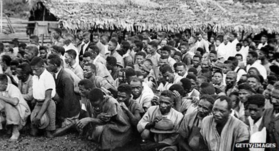
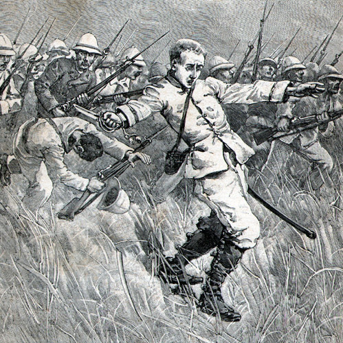

Nationalism in Madagascar was much present when the french ruled the native's territory (which was madagascar). There was a small group known as the Merina's who were based in Antananarivo. They were led by a Malgasy Protesten clergyman named Pasty Ravelojoana. The Marina's were the voice of rebellion in Madagascar, they helped keep the hope running. The Marina's were a secret society dedicated to restoring nationalism for the Native people of Madagascar. Their cultural identity was formed in 1913. The groups efforts paid off in the long run when Madgascar got its independence on June 26, 1960.
"
Nationalist sentiment against French colonial rule eventually emerged among a small group of Merina intellectuals who had been educated by Europeans and exposed to Western intellectual thought. The group, based in Antananarivo, was led by a Malagasy Protestant clergyman, Pastor Ravelojoana, who was especially inspired by the Japanese model of modernization. A secret society dedicated to affirming Malagasy cultural identity was formed in 1913, calling itself Iron and Stone Ramification (Vy Vato Sakelika—WS). Although the WS was brutally suppressed, its actions eventually led French authorities to provide the Malagasy with their first representative voice in government.
"
"
Malagasy veterans of military service in France during the Great War bolstered the embryonic nationalist movement. Throughout the 1920s, the nationalists stressed labor reform and equality of civil and political status for the Malagasy, stopping short of advocating independence. For example, the French League for Madagascar under the leadership of Anatole France demanded French citizenship for all Malagasy people in recognition of their country's wartime contribution of soldiers and resources. A number of veterans who remained in France were exposed to French political thought, most notably the anticolonial and pro-independence platforms of French socialist parties. Jean Ralaimongo, for example, returned to Madagascar in 1924 and became embroiled in labor questions that were causing considerable tension throughout the island.
"
Nationalism influenced Madagascar by proving that the natives of Madagascar are not inferior. The thought of hope brought the natives together, and even formed special groups (see the first tab).
The Madagascar natives themselves did not have a strong navy or military force. While under French rule, the French developed a navy for Madagscar to help fight off foreign invaders.
"In Madagascar, there are many natural resources. The produce graphite, chromite, coal, bauxite, salt, quartz, and tar sands. They are also known for having semiprecious stones, mica, fishing, and hydro power. About ten percent of the Madagascan population is nomadic, which means that they are descents of nomads. So many will move around to find more natural resources to use for supplies. Some of the agriculture products that are produced are coffee beans, vanilla, sugarcane, coca, cassava (tapioca) beans, and livestock products. The most dominant crop that is grown is rice. The production of rice rapidly grew in urban areas then declined from 16 or 17 percent of the total crop in the early 1970s to about 11 or 12 percent during the latter part of the decade. The major industry products were soap, sugar, textiles, glassware, paper, petroleum, and meat processing. The meat processing business is lacking because livestock production is limited in part because of traditional patterns of livestock ownership that have hampered commercialization. The export of beef decreased also because of the poor economic situation of the government. Also, wood and charcoal from the forests are used to create 80 percent of the domestic fuel needs."
French imperialism in Madagascar was very common due to Madagascar's plentiful resources. These resources include: ivory (Elephents), graphite, chromite, coal, bauxite, salt, quartz, tar sands, and various gems. The French also used slave-like tactics to ensure these products would be shipped correctly to France and other neighboring countries for trade.
The French invaded madagascar.
From our historical sources, the French invaded Madagascar at 1894-1895.
The French invaded Madagascar becusae they had limted resources and needed more supplies for trade.
The French changed Madagascar by exploiting thier recourses and viewing the natives as inferior black beings.
Madagascar gained their independence on June 26, 1960.
Madagscar's culture is reminiscent of the Malagasy people from Southeast Asia and East Africa. Death in Madagascar is the most important stage of life. When someone dies, burial tombs are made to last for a long time. At the funeral, people wear Lamba: a wrap draped around the shoulder. The mothers use this to hold thier babies.
ANYTHING IN "" 's OR ITALISIZED IS NOT FROM ME, BUT RATHER FROM A PRIMARY SOURCE OR REFERENCE. SEE CITATIONS IF NEEDED